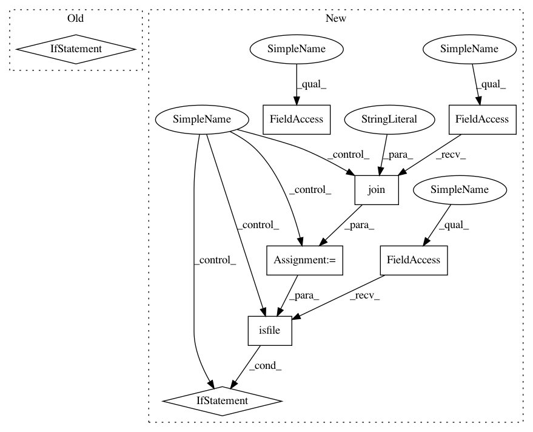

ecb620b20567af3a5cbc1a29f8938335e66aa669,sos/sos_executor.py,Base_Executor,run,#Base_Executor#Any#Any#Any#Any#,591
Before Change
p, r = n._host._task_engine.get_tasks()
pending_tasks.extend(p)
running_tasks.extend(r)
if not pending_tasks:
wf_result["pending_tasks"] = running_tasks
env.logger.info("SoS exists with {} running tasks".format(len(running_tasks)))
for task in running_tasks:
env.logger.info(task)
break
else:
time.sleep(0.1)
// close all processes
except Exception as e:
After Change
if "pending_tasks" not in wf_result or not wf_result["pending_tasks"]:
// remove task pending status if the workflow is completed normally
try:
wf_status = os.path.join(os.path.expanduser("~"), ".sos", self.md5 + ".status")
if os.path.isfile(wf_status):
os.remove(wf_status)
except Exception as e:
env.logger.warning("Failed to clear workflow status file: {}".format(e))
if exec_error.errors:
failed_steps, pending_steps = dag.pending()
In pattern: SUPERPATTERN
Frequency: 3
Non-data size: 8
Instances
Project Name: vatlab/SoS
Commit Name: ecb620b20567af3a5cbc1a29f8938335e66aa669
Time: 2017-04-08
Author: ben.bog@gmail.com
File Name: sos/sos_executor.py
Class Name: Base_Executor
Method Name: run
Project Name: facebook/FAI-PEP
Commit Name: ff1c927d9119cb9a9b56f1e9ea941252aadf1516
Time: 2018-08-13
Author: sf_wind@hotmail.com
File Name: benchmarking/utils/build_program.py
Class Name:
Method Name: _getBuildScript
Project Name: vatlab/SoS
Commit Name: 9e805c5f17d868a9d2a266e96600cfdbdee9dbfa
Time: 2017-04-07
Author: ben.bog@gmail.com
File Name: sos/sos_executor.py
Class Name: Base_Executor
Method Name: run
Project Name: vatlab/SoS
Commit Name: ecb620b20567af3a5cbc1a29f8938335e66aa669
Time: 2017-04-08
Author: ben.bog@gmail.com
File Name: sos/sos_executor.py
Class Name: Base_Executor
Method Name: run